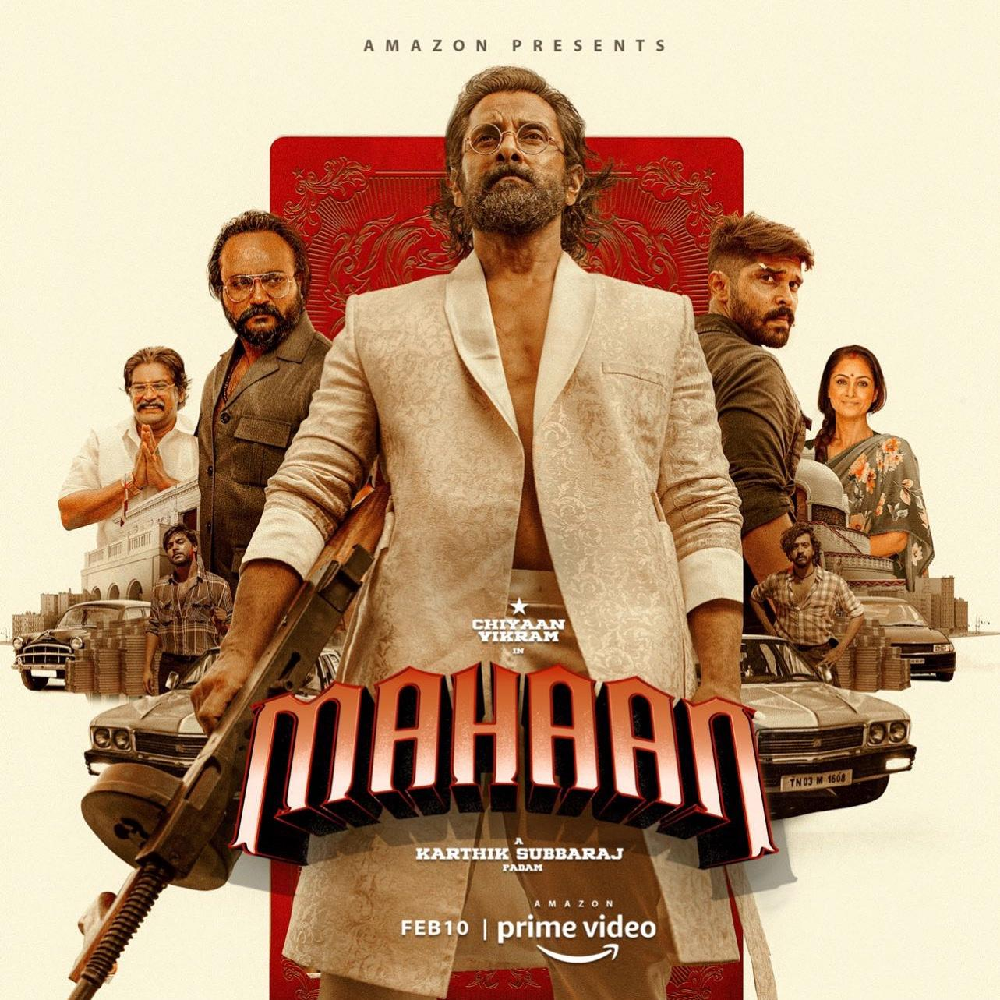
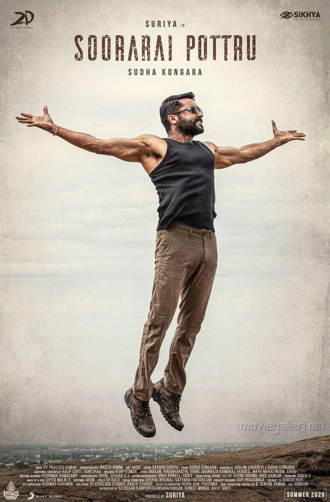
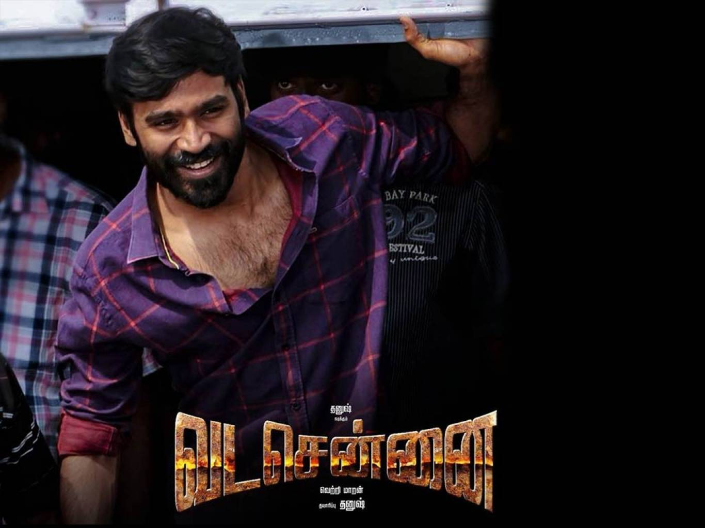
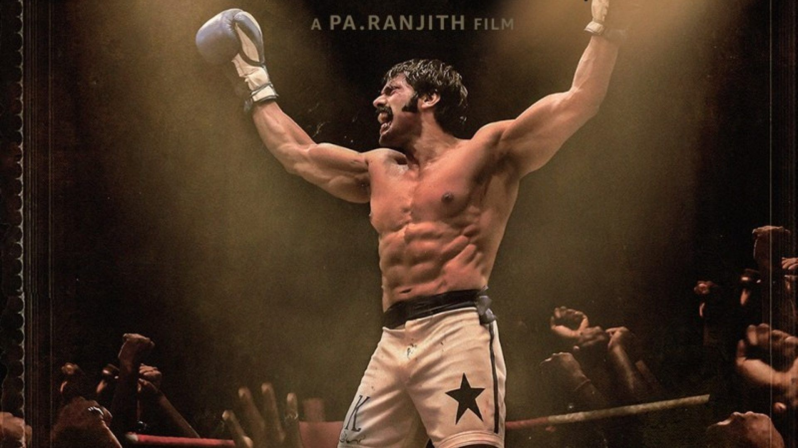
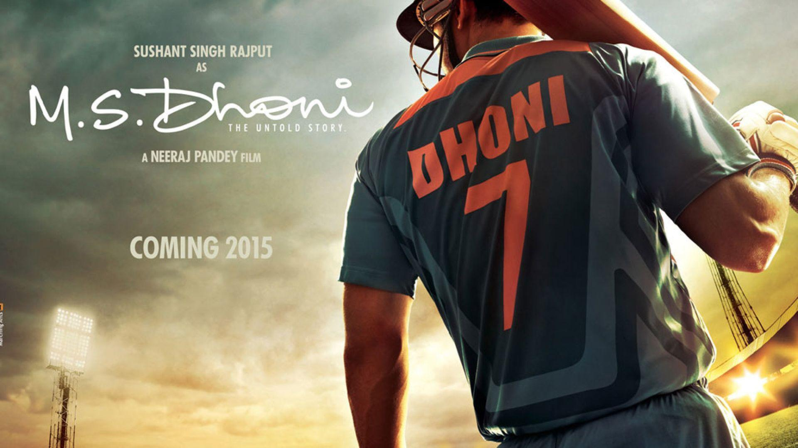

The Best Movies In My POV
My Top 5 Movies Are
1.Mahaan

The movie is a bit of a breaking bad and All The Character Devolopment Is Perfect.
2.Soorarai Potru

It is a Real based story and highly motivating
3.Vadachennai

Its a Gangster and Thriller movie Everyone likes it
4.Sarpatta Parambarai

It is also an real based story about boxing at the time of 90s
5.MS Dhoni the untold story

Real based story on my idol MSD.It tells about the challenges and struggles of MSD to be a succesful cricketer